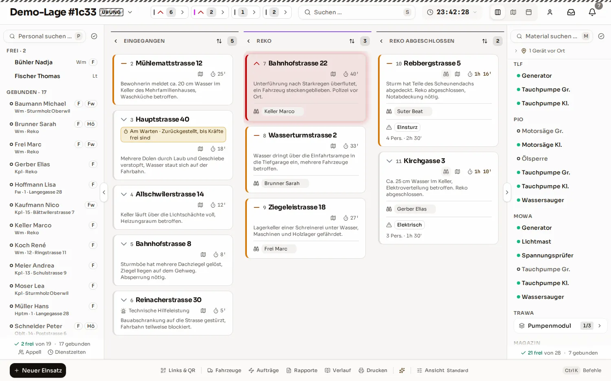

Open source · gratuit · Suisse
Le tableau d’intervention du poste de commandement.
KP Rück reproduit sous forme numérique le tableau magnétique du PC arrière : interventions, personnel, véhicules et matériel sur un seul tableau – en direct sur chaque appareil.
Sans compte – choisir un rôle et commencer, aussi en français


Né du service opérationnel réel des sapeurs-pompiers d’Oberwil BL – éprouvé sur le terrain et développé en continu.
Trois niveaux de redondance.
La mesure de toute chose
« Quand le réseau tombe, c’est le papier qui conduit »
Un tableau qui devient noir à la première coupure de courant n’est pas un document de conduite. D’où une redondance à plusieurs niveaux – chaque niveau fonctionne sans celui du dessus.
Niveau 1
Plusieurs appareils toujours synchronisés
Tablettes, écrans de projection et téléphones sont reliés en direct au même tableau. Si un appareil tombe en panne ou se fige, un autre continue – il n’y a rien à sauver et rien à reporter.
Niveau 2
Un boîtier de secours à la caserne
Un mini-PC à la caserne reflète le tableau en continu. Si Internet tombe, il prend le relais : le tableau continue dans le réseau local, avec la carte de votre propre serveur de tuiles et l’imprimante sur le réseau local. Au retour du réseau, les données saisies localement sont à nouveau synchronisées.
Niveau 3
Le papier prend le relais
L’état du tableau part toutes les quelques minutes sur l’imprimante thermique, la feuille de situation sur simple pression. Si tout tombe, la dernière feuille devient le tableau. Au redémarrage, une seule personne reporte dans l’application ce qui a été fait à la main.
Tableau magnétique au mur
Un tableau sur chaque appareil.
Les colonnes sont les phases d’intervention : les cartes passent de gauche à droite par glisser-déposer. Le projecteur au PC, la tablette sur la table et le téléphone du fourrier montrent le même état – sans que personne n’ait à appuyer sur « actualiser ».
- Attribuer personnel, véhicules et matériel – KP Rück avertit en cas de double affectation
- Qui arrive s’annonce lui-même par code QR ; temps de service et pauses sont suivis
- Attribuer au clavier : « 14 tlf meier » dans la palette de commandes
Notes téléphoniques sur des bouts de papier
Des annonces rattachées à l’intervention.
Par le formulaire d’annonce, par téléphone ou par l’interface ouverte depuis le système d’alarme (p. ex. Divera ou FireHub). L’aide à la conduite reprend l’annonce d’un clic – elle devient une intervention sur le tableau.
- Formulaire d’annonce par lien ou QR pour le téléphone et les gens qui se présentent, sans compte
- Si quelqu’un signale une deuxième fois la même place sinistrée, le tableau demande confirmation
- Interface ouverte – n’importe quel système d’engagement peut ouvrir des interventions
Épingles sur le plan de la commune
Qui est où.
Toutes les interventions sur une carte, et les véhicules avec leur position GPS en option. Dès qu’un véhicule arrive sur les lieux, le tableau propose lui-même le changement de statut.
- Toutes les interventions par priorité et par statut sur une carte
- Les affectations comme une ligne – quel véhicule est affecté à quelle intervention
- Radar des précipitations et alertes officielles (MétéoSuisse, Alertswiss)
Groupe WhatsApp et message radio
L’équipe annonce depuis son téléphone.
Chaque équipe voit ses propres places sinistrées : arrivée, récupération, fin d’intervention – sans radio. L’équipe de reconnaissance remplit son formulaire avec photos sur son propre téléphone ; l’annonce est rattachée à la bonne intervention, au lieu de se perdre dans un groupe de discussion.
- Vue terrain sans compte, par lien et code
- Les demandes – matériel, renfort, récupération – restent ouvertes jusqu’à ce que le PC les ait réglées
- Missions : plusieurs places sinistrées en un itinéraire, ordre optimisé selon la distance
Rapport le week-end suivant
Le rapport d’intervention s’écrit tout seul.
Le journal d’intervention et les temps de réaction sont générés au fil de l’intervention et deviennent un PDF. On corrige par une nouvelle entrée, pas à la gomme – la nuit reste ainsi documentée.
- Le journal consigne lui-même changements de statut, affectations et annonces
- Rapport d’intervention en PDF avec les temps de réaction
- Liste des éléments en suspens : rapports ouverts, récupérations et matériel sur les lieux
Exploitation
Vos données restent chez vous.
KP Rück est open source et tourne sur votre propre machine à la caserne ou dans votre propre cloud. Interventions, personnel, véhicules et matériel restent sous votre contrôle. Pas de frais de licence, aucune dépendance à un fournisseur.
Pour essayer
Double-clic
Installer Docker Desktop, double-cliquer sur un fichier : le tableau tourne sur l’ordinateur de la caserne. Le chemin le plus court vers vos propres données.
Fonctionne aussi sans Internet
Mini-PC à la caserne
Docker Compose sur un petit serveur dans votre réseau, avec votre propre serveur de cartes et l’imprimante sur le réseau local.
Aucune machine à gérer
Hébergé
Chez l’hébergeur de votre choix. Un boîtier de secours à la caserne peut prendre le relais si le réseau tombe.
Un appui pour l’installation et l’exploitation est possible sur entente – contact.
Étendue des fonctions
Ce qu’il y a dedans.
Né d’événements et d’exercices réels, pas d’une liste de fonctions. Tout ce qui vient de l’extérieur – alarme, GPS, imprimante – est facultatif : KP Rück fonctionne aussi entièrement sans ces raccordements.
Tableau & engagementPhases d’intervention · attribution · doubles affectations · enregistrement QR · temps de service · projecteur
- Les colonnes sont les phases de l’intervention – les cartes se déplacent de gauche à droite
- Attribuer personnel, véhicules et matériel – KP Rück avertit en cas de double affectation et rend visibles les conflits de ressources
- Le matériel sur les lieux : quel moyen est attribué à quelle intervention, et depuis quand
- Priorités, durées et délais visibles par intervention
- Missions : plusieurs interventions comme une tournée pour une équipe, ordre optimisé selon la distance sur simple pression d’un bouton
- Les missions récurrentes, comme le barrage d’une zone ou l’enlèvement de bois après une tempête, peuvent être préparées et mises à disposition directement lors d’un événement
- Enregistrement par code QR – qui arrive s’annonce lui-même
- Temps de service : qui est là depuis quand, combien de ce temps en intervention et qui est en pause – les présences trop longues ressortent
- Fiche d’engagement avec code QR pour les équipes et les conducteurs, remise directement au PC
- Vue projecteur pour le mur du PC – les mêmes cartes d’intervention que sur le tableau, sans les éléments de commande
- Attribuer au clavier : « 14 tlf meier » dans la palette de commandes place le TLF et Meier sur l’intervention 14 – plus des raccourcis clavier pour aller vite
Alarme & annoncesInterface ouverte · Divera · FireHub · formulaire d’annonce · reconnaissance · terrain
- Interface ouverte – n’importe quel système d’engagement peut ouvrir des interventions
- Peut reprendre les alarmes de Divera ou FireHub facultatif
- Formulaire d’annonce par lien ou QR, pour le téléphone et pour les gens qui se présentent
- Réception dans une file d’attente, reprise d’un clic
- Les annonces en double pour la même place sinistrée sont détectées ; deux interventions peuvent être fusionnées – avec équipe, reconnaissance et rapport – puis séparées à nouveau
- Alarmer l’effectif depuis le tableau facultatif
- En route : qui a accepté l’alarme Divera apparaît à l’appel – enregistrement d’un clic facultatif
- Annonces de reconnaissance avec photos, directement depuis le téléphone de la reconnaissance
- Vue terrain pour les équipes : voir leurs propres places sinistrées, annoncer leur arrivée et la fin de l’intervention, demander une récupération et transmettre au PC des annonces et des rapports avec photos
- Les demandes du terrain – matériel, renfort, récupération – restent ouvertes sur l’intervention jusqu’à ce que le PC les ait réglées ; l’équipe en voit l’état sur son téléphone
Carte & véhiculesPriorités · GPS · affectations · radar et alertes · tuiles propres
- Toutes les interventions par priorité et par statut sur une carte
- Positions des véhicules par GPS facultatif
- Proposition de statut dès qu’un véhicule arrive sur les lieux
- Les affectations comme une ligne – quel véhicule est affecté à quelle intervention
- Radar des précipitations de la dernière heure et alertes officielles (MétéoSuisse, Alertswiss) sur la carte facultatif
- Tuiles cartographiques aussi depuis votre propre serveur à la caserne
Après & exploitationRapport en PDF · journal · indicateurs · administration · impression thermique · exercice
- Rapport d’intervention en PDF avec journal d’intervention et temps de réaction – il se construit pendant l’intervention et est déjà largement préparé au retour à la caserne
- Journal d’intervention sur le tableau : il consigne lui-même changements de statut, affectations et annonces, vos propres entrées avec ⇧J – complété, jamais écrasé
- Indicateurs dès le cours de l’événement : annonces ouvertes par priorité et temps de réaction – en exercice, comme évaluation de l’exercice
- Liste des éléments en suspens : les rapports ouverts, les récupérations en attente et le matériel encore présent sur une place sinistrée restent visibles jusqu’à la clôture
- Espace d’administration propre à chaque corps : effectif, parc de véhicules, listes de matériel, types d’intervention et priorités
- Import et export en Excel
- Impression thermique à la caserne via un agent d’impression dédié facultatif
- Rôles : modifier ou seulement suivre, interface sombre pour le PC dans la pénombre
- Mode exercice avec générateur et courses simulées, proprement séparé du cas réel
Questions & réponses
Les questions les plus fréquentes.
Pourquoi changer ?
Plus de doubles affectations. Plus d’annonce qui se perd dans un groupe de discussion. Moins de trafic radio pour des questions dont la réponse est déjà sur le tableau. Tout le monde voit le même tableau de la situation au même moment – et le rapport d’intervention est déjà là à la rentrée, au lieu du week-end suivant.
Pour quels corps et quelles interventions KP Rück est-il conçu ?
Pour les sapeurs-pompiers de milice, les corps locaux, les centres de renfort et les sapeurs-pompiers professionnels – pour les interventions courantes, les intempéries et plusieurs événements à la fois. Partout où il faut coordonner en arrière-plan du personnel, des véhicules et du matériel, KP Rück montre ses atouts. En tant qu’application open source, il peut aussi être adapté à la protection civile, aux états-majors de conduite et à d’autres organisations d’intervention.
Où se trouvent les données et quelles interfaces existe-t-il ?
Comme KP Front, KP Rück est entièrement exploité par l’organisation elle-même – sur une machine à la caserne ou dans son propre cloud. Interventions, personnel, véhicules et matériel se trouvent dans sa propre base de données ; il n’y a ni contrôle de licence ni statistiques d’utilisation. Les services externes comme les cartes en ligne ou la recherche d’adresses ne reçoivent que ce dont la fonction utilisée a besoin et peuvent être désactivés. On peut raccorder des systèmes d’alarme (tout système de dispatching via l’interface ouverte, Divera et FireHub directement – avec Divera, aussi l’alarme de l’effectif), une imprimante thermique sur le réseau local et les positions GPS des véhicules. Tous les raccordements sont facultatifs.
Combien cela coûte-t-il ?
Le logiciel lui-même ne coûte rien. KP Rück est open source (AGPL) – pas de licence, pas d’abonnement, pas de coût par appareil. Restent les coûts propres à l’exploitation, à l’infrastructure et, le cas échéant, à une assistance externe.
Que faut-il pour l’exploiter ?
Un petit mini-PC ou serveur à la caserne suffit. L’installation, les mises à jour et les sauvegardes nécessitent une personne à l’aise avec Docker et la ligne de commande, que ce soit au sein du corps, de la commune ou auprès d’un prestataire informatique. Le guide et l’espace d’administration accompagnent la mise en place. Nous répondons volontiers aux questions générales ; les données et l’exploitation restent sous la responsabilité de chaque corps.
Une assistance est-elle proposée pour l’installation et l’exploitation ?
Oui. Les questions générales concernant l’installation et l’utilisation peuvent recevoir une réponse gratuitement. KP Rück peut être exploité sur une infrastructure propre ou auprès d’un fournisseur d’hébergement ou de cloud choisi par l’organisation. Une assistance pour l’installation, la configuration, les mises à jour ou l’exploitation est également possible sur accord individuel. Une assistance plus étendue peut être facturée.
Que se passe-t-il en cas de panne de courant, de réseau ou d’un appareil ?
KP Rück sauvegarde l’état actuel dans l’application et peut le restaurer après une panne. L’application peut être exploitée sur plusieurs appareils ainsi que sur une instance locale supplémentaire. L’état du tableau peut en outre être imprimé régulièrement et utilisé comme solution de repli. Les sauvegardes externes de l’installation et de l’infrastructure relèvent de la responsabilité de l’organisation exploitante.
KP Rück a-t-il absolument besoin de KP Front ?
Non. KP Rück fonctionne de manière entièrement autonome – avec sa propre base de données, son propre système de connexion et ses propres mises à jour. Il donne toute sa mesure en combinaison avec KP Front, l’application pour le front sur le lieu d’intervention : les deux reçoivent les mêmes alarmes du système de dispatching, lisent la même liste du personnel et classent les alarmes selon la même liste de mots-clés, si souhaité avec le même accès Divera. KP Front et KP Rück travaillent ainsi avec les mêmes données de départ, sans devoir entretenir deux fois le raccordement d’alarme et l’effectif.
À quoi sert l’imprimante locale de la caserne dans KP Rück ?
L’imprimante de la caserne met l’essentiel sur papier, directement à la caserne ou au poste de commandement. KP Rück imprime les fiches d’engagement pour les équipes et les conducteurs automatiquement si souhaité, dès que le premier véhicule part pour une intervention, ou à tout moment à la main ; l’aperçu de la situation avec interventions, état des véhicules et personnel ainsi que la liste de récupération du matériel encore sur les lieux, sur simple pression. En solution de repli, l’état du tableau peut en outre être imprimé régulièrement. On raccorde une imprimante thermique 80 mm courante (ESC/POS) sur le réseau local – cela fonctionne pour tout corps de sapeurs-pompiers, pas seulement en Suisse.
Peut-on l’adapter à nos procédures ?
Oui. Chaque corps a son propre espace d’administration : types d’intervention, priorités, effectif, parc de véhicules et listes de matériel y sont librement réglables, l’import et l’export passent par Excel. Et comme tout le code est sur GitHub , tout le reste peut être construit – par vous-mêmes ou sur mandat.
Dans quelles langues KP Rück est-il disponible ?
L’interface utilisateur de KP Rück est actuellement disponible en allemand et en français. En tant qu’application open source, KP Rück peut être étendu à d’autres langues. Cela nécessite une traduction complète et vérifiée par des spécialistes des termes utilisés.
Comment commencer ?
Par la démo, sans compte – choisir un rôle et commencer. Ensuite, l’essayer à un exercice ; le mode exercice est proprement séparé du cas réel. Si cela convient, le guide d’installation accompagne la mise en place et l’exploitation. Nous répondons volontiers aux questions générales ; les données et l’exploitation restent sous la responsabilité de chaque corps.
KP Front – le projet frère sur les lieux : carte de situation, plans d’objet et surveillance PR, même sans réseau. Les deux reçoivent la même alarme et fonctionnent indépendamment l’un de l’autre. Guide : les deux sur un même serveur →
Découvrir KP FrontContact
Essayez par vous-mêmes.
La démo fonctionne sans compte. Vous voulez utiliser KP Rück chez vous, ou il manque quelque chose ? Écrivez-nous – nous lisons tout.
Écrire directement Sans compte GitHub, ou si quelque chose ne doit pas être public – également pour « nous aimerions l’essayer chez nous ».
Pour les questions et les idées ouvertes, il y a les discussions GitHub.